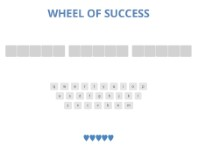
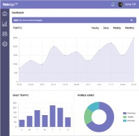
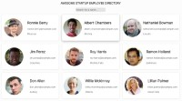

HOREA TIFF
<WEB DESIGNER/>
ABOUT ME

I'm Horea, a web designer based in Cluj-Napoca, Romania. I started out as a tech enthusiast in my early years and that led me to getting involved into web development.
My goal is to create excelent user friendly designs that help clients achieve their goals. If you are looking for a web developer who can take your ideas to the next level, don't hesitate to contact me. I would love to wok on your projects!
PROJECTS
Interactive Photo Gallery

This is a photo gallery i made where the user can search a specific photo by its caption and there is also a lightbox for navigating between photos.
JavaScript was used for making the lightbox and search function along with some CSS for styling.
PROJECTS
Game Show App
In this project i made a "WHEEL OF SUCESS" game where a player needs to guess the correct words in a phrase using the on-screen keyboard with a maximum of 5 wrong letters. If the player succeeds, a winner finish screen will congratulate him, else a lose screen will appear.
A lot of CSS and JavaScript was involved in making this game come to life.
PROJECTS
WebApp Dashboard
This is an interactive dashboard for viewing traffic and also sending messages to certain users. There is a search function for searching users and also local storage enabled for storing settings.
This project was made with HTML/SCSS and JavaScript and is both mobile and desktop friendly. Inline SVG's where also used on this dashboard.
PROJECTS
Employee Directory with an API
This employee directory uses an public API for populating the user cards with 12 random users. The cards also have a modal which displays even more user data on click. There are also buttons for navigating forwards and backwards between users along with a search function for filtering user names.
Here i used some CSS and a lot of JavaScript for displaying the modal, getting the users and also for the search function.